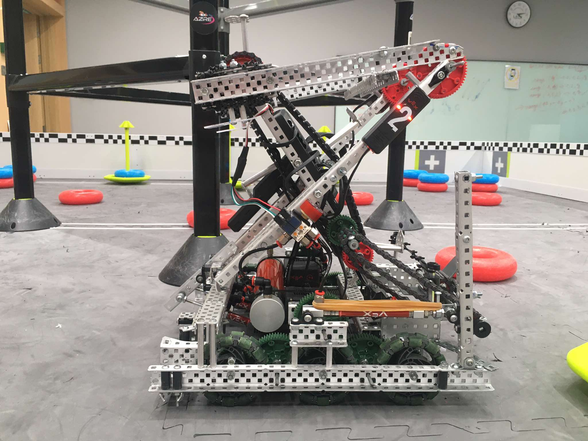
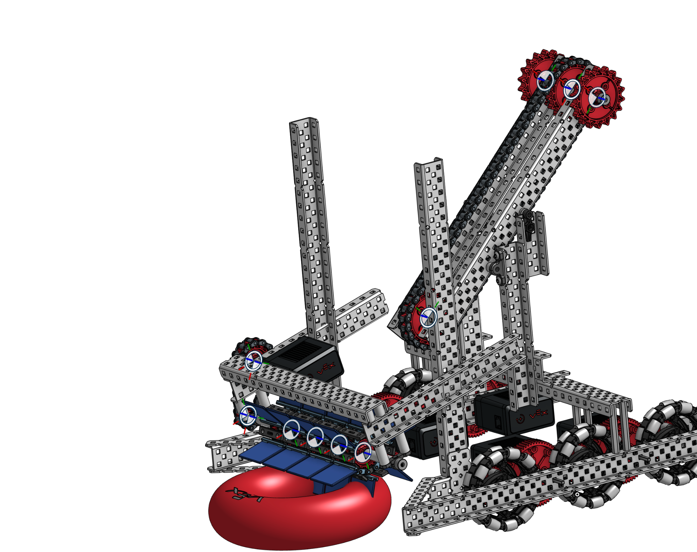
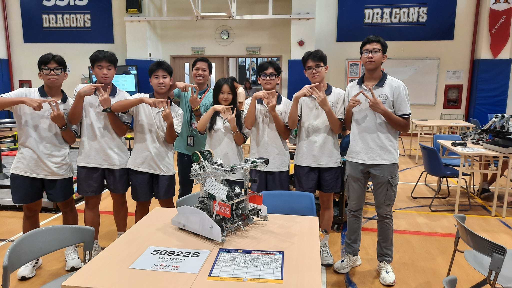
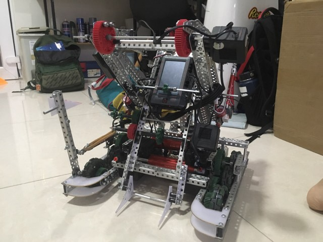
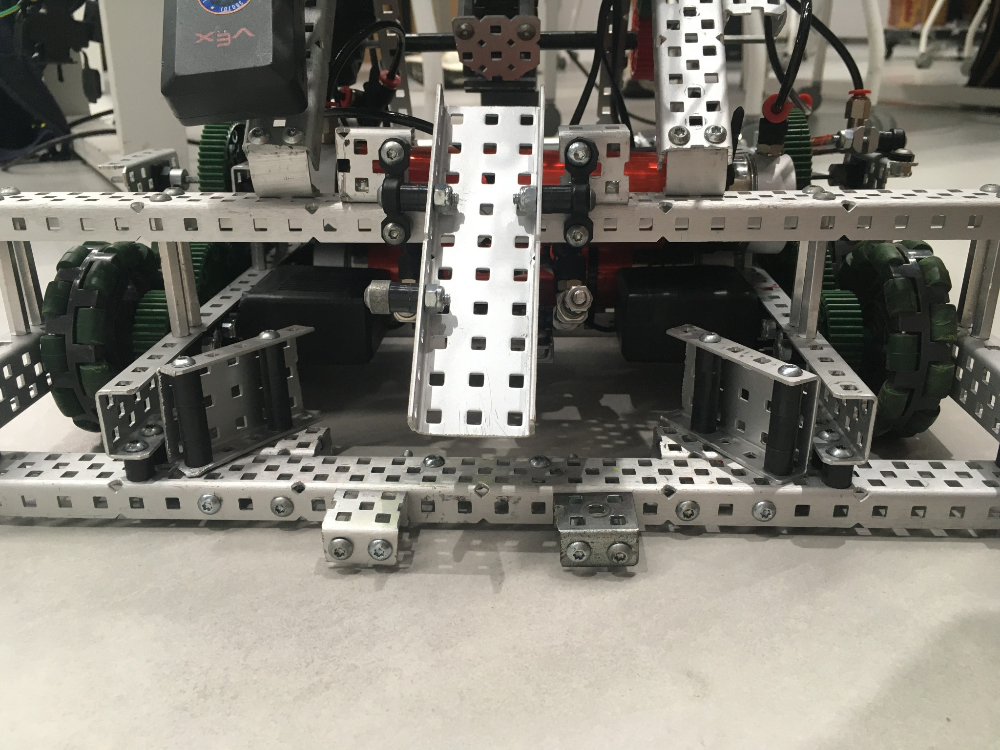
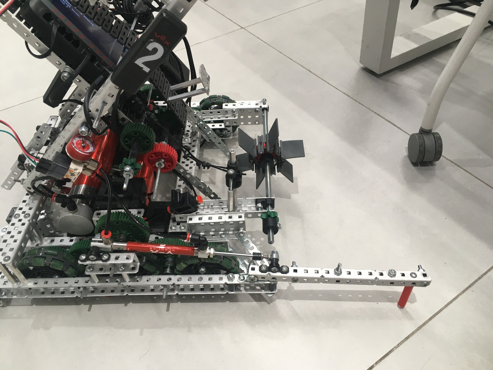
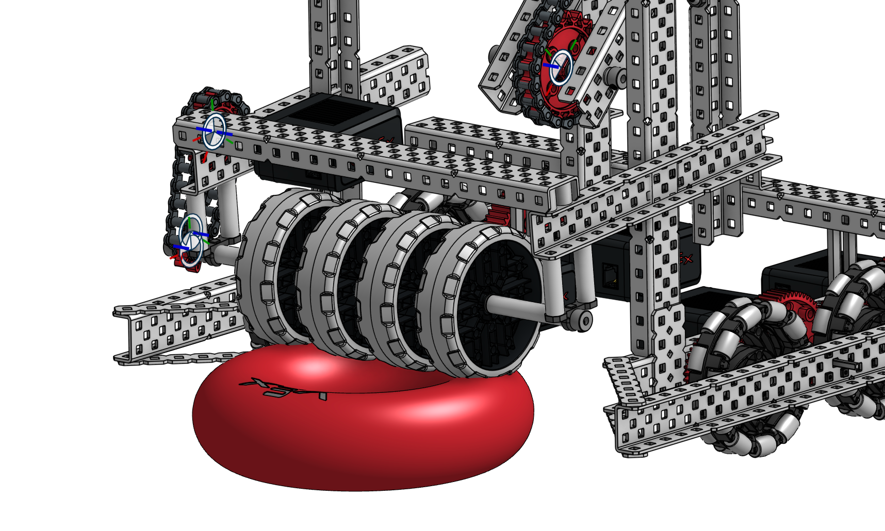
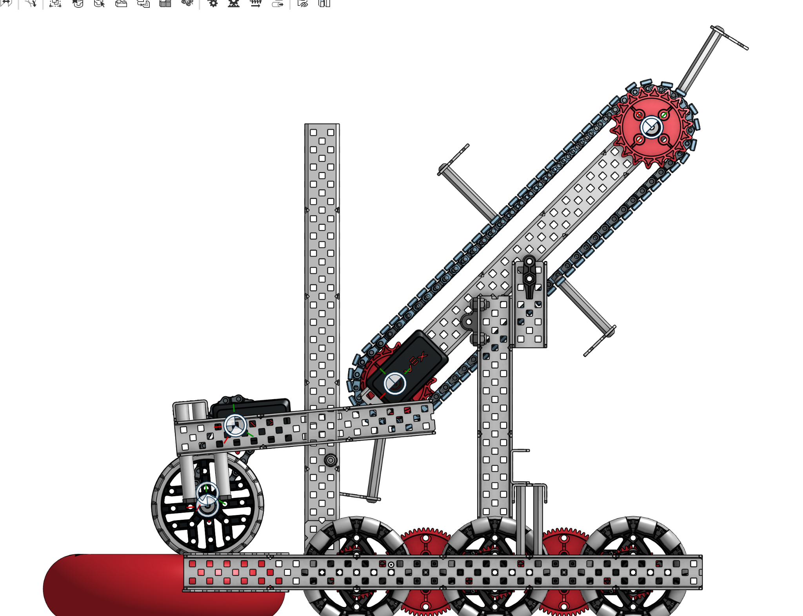

01
Build first.
We wanted a functional robot fast. Early decisions were made directly on the hardware, with limited CAD and version planning.
I started by trying to make a robot work. I finished the year thinking about the whole system — geometry, mechanisms, reliability, testing, and what should be designed before the first piece of metal is cut.


Competition build
CAD studyThe first season was messy in the most useful way. Building quickly gave us a robot sooner, but every later change showed me why planning, packaging, and iteration matter.
We wanted a functional robot fast. Early decisions were made directly on the hardware, with limited CAD and version planning.
As mechanisms accumulated, clearance, access, drivetrain changes, and structural revisions became harder than expected.
Competition exposed what practice sometimes hid: small inconsistencies become real performance problems under pressure.
I left the year convinced that CAD, BOM thinking, testing criteria, and version history should happen earlier — not after problems appear.
The images are deliberately large enough to inspect. Click any photo to open the original high-resolution image in a full-screen lightbox.


Rather than listing “Version 1” and “Version 2,” this section shows what changed in my engineering mindset between them.

The first build prioritized getting mechanisms onto the robot quickly. It gave us something tangible to test — and exposed how difficult later changes could become.
The later build reflected more attention to packaging, mechanism interaction, access, and what competition had already taught us about reliability.
Mechanisms have to coexist, not just function individually.
A robot should leave room to repair and change what is not working.
The goal shifted from “it worked” to “it keeps working.”
These close-ups show why the season became a lesson in systems thinking: structure, rollers, pneumatics, drivetrain components, electronics, and access all compete for the same physical space.


A subsystem can work alone and still become difficult once structure, drivetrain, wiring, and access are added around it.
One major lesson was how expensive a structural or drivetrain revision becomes after everything else has already been built around it.
Repeatability mattered more than a mechanism succeeding once. That changed how I thought about testing.
CAD was not valuable because it looked polished. It let me reason about geometry, motion paths, spacing, and revisions before the physical robot became expensive to change.


The scoreboard mattered, but the deeper value was seeing which design choices held up, which ones were hard to revise, and which habits needed to change for the next season.
I stopped seeing the robot as separate parts.
By the end of the season, I was beginning to see geometry, mechanisms, electronics, code, documentation, driver behavior, and testing as one connected engineering system.